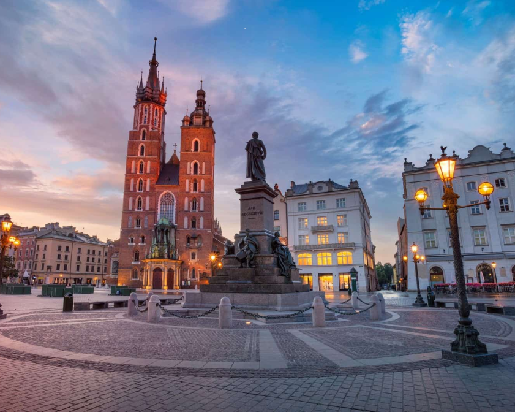

Kraków to jedno z najstarszych miast w Polsce, pełne historii, tradycji i niepowtarzalnej atmosfery. Miasto leży nad Wisłą, w południowej części kraju, w województwie małopolskim. Kraków był stolicą Polski przez ponad 500 lat, aż do przeniesienia jej do Warszawy w 1596 roku. Dziś jest jednym z najważniejszych ośrodków kulturalnych, naukowych i turystycznych w Polsce. W Krakowie znajduje się wiele zabytków, które przyciągają turystów z całego świata, w tym Zamek Królewski na Wawelu.
Wawel to jeden z najważniejszych symboli Krakowa, który przez wieki był siedzibą królów polskich. W zamku mieści się także Katedra Wawelska, w której koronowano polskich monarchów. Jest to miejsce niezwykle ważne dla historii Polski. Wawel to nie tylko zamek, ale także muzeum, które oferuje turystom możliwość zwiedzenia wielu wystaw poświęconych historii Polski i kultury. W okolicach Wawelu można również podziwiać malownicze widoki na Wisłę.
W Krakowie znajduje się również Sukiennice, jeden z najpiękniejszych przykładów architektury renesansowej w Polsce. Sukiennice to budowla, która od średniowiecza pełniła funkcję handlową, a dziś stanowi jeden z głównych punktów turystycznych w mieście. Wewnątrz znajduje się sala wystawowa, w której można podziwiać dzieła sztuki oraz regionalne wyroby rzemieślnicze. Sukiennice znajdują się na Rynku Głównym, w sercu Starego Miasta.
Stare Miasto w Krakowie zostało wpisane na Listę Światowego Dziedzictwa UNESCO. Jest to jedno z najlepiej zachowanych średniowiecznych miast w Europie, pełne urokliwych uliczek, kamienic i zabytków. W samym sercu miasta znajduje się Rynek Główny, który jest jednym z największych średniowiecznych rynków w Europie. W Krakowie można także odwiedzić Kościół Mariacki, którego wieża jest słynna z codziennego hejnału.
W Krakowie znajduje się także wiele innych zabytków, takich jak Kościół Świętej Anny, Barbakan, czy Brama Floriańska. Miasto pełne jest również muzeów, teatrów i galerii sztuki, które przyciągają turystów z całego świata. Na uwagę zasługują także liczne festiwale kulturalne, takie jak Festiwal Filmowy, Festiwal Kultury Żydowskiej czy Festiwal Jazzowy.
Miasto jest także pełne zieleni, a Planty, które otaczają Stare Miasto, stanowią idealne miejsce do spacerów. W Krakowie znajduje się również wiele parków, takich jak Park Jordana czy Zakrzówek, które oferują mieszkańcom i turystom przestrzeń do wypoczynku na świeżym powietrzu. Jednym z bardziej malowniczych miejsc w Krakowie jest Kopiec Kościuszki, z którego rozciąga się wspaniały widok na miasto i okolice.
W Krakowie mieści się także Uniwersytet Jagielloński, który jest jednym z najstarszych uniwersytetów w Europie. Uczelnia ta przyciąga studentów z całego świata, a jej historia sięga 1364 roku. To tutaj studiował m.in. papież Jan Paweł II, który przez wiele lat mieszkał i studiował w Krakowie.
Kraków to również miasto pełne tradycji kulinarnych. W restauracjach i kawiarniach można spróbować tradycyjnych polskich potraw, takich jak pierogi, barszcz czy kiełbasa, ale także nowoczesnych dań inspirowanych kuchniami z całego świata. Miasto słynie również z doskonałej kawy i słodkich wypieków, które można spróbować w licznych kawiarniach na Starym Mieście.
Warto dodać, że Kraków jest również miejscem pielgrzymek. Z pobliskich Łagiewnik codziennie przybywają pielgrzymi, aby odwiedzić Sanktuarium Bożego Miłosierdzia, jedno z najważniejszych miejsc religijnych w Polsce. Miasto jest również związane z papieżem Janem Pawłem II, którego ślady można odnaleźć w wielu miejscach w Krakowie.
W Krakowie odbywają się także liczne wydarzenia międzynarodowe, takie jak targi, konferencje czy koncerty. Miasto jest ważnym ośrodkiem biznesowym, a także popularnym miejscem organizacji wydarzeń kulturalnych. Jego dynamiczny rozwój sprawia, że Kraków staje się coraz bardziej rozpoznawalnym miastem na mapie Europy.
Jednym z charakterystycznych elementów Krakowa są jego tradycje ludowe, które są pielęgnowane przez mieszkańców. Co roku odbywają się liczne festyny, jarmarki i wydarzenia związane z historią i kulturą miasta. Warto również wspomnieć o krakowskich rzemieślnikach, którzy wytwarzają tradycyjne wyroby, takie jak koronkowe obrusy, ceramikę czy wyroby z drewna.
Kraków to miasto, które nieustannie się rozwija, łącząc nowoczesność z tradycją. Wkrótce zakończony zostanie projekt rewitalizacji Kazimierza, dawnej dzielnicy żydowskiej, która stanie się jeszcze bardziej atrakcyjna turystycznie. Wkrótce także powstaną nowe obiekty kulturalne i edukacyjne, które przyciągną jeszcze więcej turystów i inwestorów.
Na koniec warto dodać, że Kraków to miasto, które łączy w sobie wiele różnych elementów: historię, kulturę, sztukę, naukę, religię, a także nowoczesne technologie. To miejsce, które wciąż tętni życiem, zachowując przy tym swój niepowtarzalny urok.